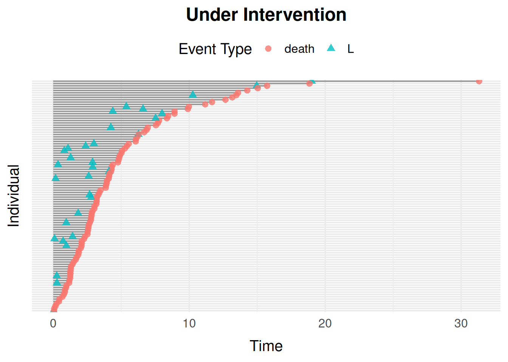

Introduction
simevent 0.1.1’s functions (simEventData(), the preset wrappers such as simSurvData(), sim.generic(), sim.from.data(), alphaSim(), …) have been removed in favour of the sim_model()/sim_events() API. This vignette introduces it and shows how to translate code using the old functions.
The sim_model() Interface
A sim_model() call has three kinds of possible inputs:
-
sim_covariate(): a baseline covariate generator. TakesNand, optionally, any other covariate defined earlier in the same call (matched by argument name). -
sim_process(): a"censoring","terminal", or"transient"(fires at mostlimittimes, defaultInf) process, with Weibulleta/nuparameters or a given cumulative baseline hazard curve (cumhaz). -
sim_effect(): ato ~ fromedge with a Cox-typecoef, wherefromis a covariate or process name andtois a process name. Several terms take onecoefeach, as insim_effect(death ~ L0 + A0, coef = c(1.5, -0.5)).
model <- sim_model(
L0 = sim_covariate(function(N) rbinom(N, 1, 0.4)),
censoring = sim_process("censoring", eta = 0.1, nu = 1.1),
death = sim_process("terminal", eta = 0.1, nu = 1.1),
effects = list(sim_effect(death ~ L0, coef = 1.5))
)
model
#> <sim_model>
#> 1 covariate(s): L0
#> 2 process(es): censoring, death
#> 1 effect(s):
#> death ~ 1.5 * L0
data <- sim_events(model, n = 100)
head(data)
#> Key: <id>
#> id time event L0
#> <int> <num> <fctr> <int>
#> 1: 1 4.601027 censoring 1
#> 2: 2 1.826472 death 0
#> 3: 3 1.265335 death 1
#> 4: 4 1.407940 death 1
#> 5: 5 5.401157 death 0
#> 6: 6 0.104684 death 1sim_events()’s intervene argument replaces sim.generic()’s alpha.intervention/baseline.intervention pair with a single named list: give a process name to scale its eta, or a covariate name to fix it to a constant.
data_intervened <- sim_events(
model,
n = 100,
intervene = list(death = 0.2, L0 = 1)
)
head(data_intervened)
#> Key: <id>
#> id time event L0
#> <int> <num> <fctr> <num>
#> 1: 1 5.2617802 death 1
#> 2: 2 2.3162950 death 1
#> 3: 3 0.2927028 death 1
#> 4: 4 5.8674881 censoring 1
#> 5: 5 1.5516597 death 1
#> 6: 6 5.5676933 death 1Non-Linear and History-Dependent Effects
The right-hand side of a sim_effect() formula doesn’t have to name a single covariate or process. It can be any R expression of the covariate/process values plus the current time t, the event times event_time(proc, k) (time of proc’s k-th event, or k-th latest if k is negative, 0 if it hasn’t happened yet) and node values at earlier times, such as bp(event_time(visit, -1)). Covers thresholds, interactions, and nonlinear transforms inline, and effects depending on a process’s full occurrence history, not just its current count, without a separate sim_derived() covariate.
For example, an effect that only fires on a process’s 3rd occurrence, not the 1st or 2nd:
relapse_model <- sim_model(
censoring = sim_process("censoring", eta = 0.01, nu = 1),
relapse = sim_process("transient", eta = 0.3, nu = 1, limit = 5),
death = sim_process("terminal", eta = 0.01, nu = 1),
effects = list(
sim_effect(death ~ relapse == 3, coef = 8)
)
)
set.seed(1405)
relapse_data <- sim_events(relapse_model, n = 2000, max_events = 40)
deaths <- relapse_data[relapse_data$event == "death", ]
mean(deaths$relapse == 3)
#> [1] 0.893956Most deaths happen right at the 3rd relapse, not before or after.
event_time() gives access to timing, not just counts. event_time(proc, k) is the time of proc’s k-th event, and 0 if it hasn’t happened yet. Effects on time since an event therefore take the form proc * f(t - event_time(proc, k)): multiplying by the event count switches the effect off until the event has happened, whatever f is.
Here the death hazard spikes right after an operation and then fades:
operation_model <- sim_model(
censoring = sim_process("censoring", eta = 0.05, nu = 1),
operation = sim_process("transient", eta = 0.2, nu = 1, limit = 1),
death = sim_process("terminal", eta = 0.02, nu = 1),
effects = list(
sim_effect(
death ~ operation * exp(-(t - event_time(operation, 1))),
coef = 3
)
)
)
operation_data <- sim_events(operation_model, n = 2000)
head(operation_data)
#> Key: <id>
#> id time event operation
#> <int> <num> <fctr> <num>
#> 1: 1 4.8162058 operation 1
#> 2: 1 19.2543737 death 1
#> 3: 2 2.0629123 operation 1
#> 4: 2 2.4574322 death 1
#> 5: 3 0.5061987 operation 1
#> 6: 3 20.3693092 censoring 1Without the operation *, the not-yet-operated would have exp(-(t - 0)) = exp(-t), a spike at time 0 that never happened. For a risk that instead builds up after the operation, use operation * (t - event_time(operation, 1)).
A negative k counts back from the latest event. Here the death hazard drops for one time unit right after each checkup:
checkup_model <- sim_model(
censoring = sim_process("censoring", eta = 0.05, nu = 1.1),
checkup = sim_process("transient", eta = 0.3, nu = 1),
death = sim_process("terminal", eta = 0.05, nu = 1.1),
effects = list(
sim_effect(
death ~ checkup > 0 & t - event_time(checkup, -1) < 1,
coef = -2
)
)
)
checkup_data <- sim_events(checkup_model, n = 2000)
head(checkup_data)
#> Key: <id>
#> id time event checkup
#> <int> <num> <fctr> <num>
#> 1: 1 3.6908384 checkup 1
#> 2: 1 13.3649425 checkup 2
#> 3: 1 13.5615104 censoring 2
#> 4: 2 0.9333917 checkup 1
#> 5: 2 7.2505068 checkup 2
#> 6: 2 14.4228692 checkup 3The checkup > 0 & keeps the effect off before the first checkup, when event_time(checkup, -1) is 0.
Translating the Preset Wrappers
simSurvData()
simSurvData()’s default (beta = NULL, i.e. no covariate effects) is two terminal processes, censoring and death, both with eta = 0.1, nu = 1.1. The old call
simSurvData(200)becomes
model <- sim_model(
L0 = sim_covariate(function(N) runif(N)),
A0 = sim_covariate(function(N, L0) rbinom(N, 1, 0.5)),
censoring = sim_process("censoring", eta = 0.1, nu = 1.1),
death = sim_process("terminal", eta = 0.1, nu = 1.1)
)
model_data <- sim_events(model, n = 200)The old functions coded events as integers in Delta; sim_events() returns the process name in event, and id/time in place of ID/Time.
simCRdata()
simCRdata() adds a third terminal process (a second competing cause):
becomes
model <- sim_model(
L0 = sim_covariate(function(N) runif(N)),
A0 = sim_covariate(function(N, L0) rbinom(N, 1, 0.5)),
censoring = sim_process("censoring", eta = 0.1, nu = 1.1),
cause1 = sim_process("terminal", eta = 0.1, nu = 1.1),
cause2 = sim_process("terminal", eta = 0.1, nu = 1.1),
effects = list(
sim_effect(censoring ~ L0 + A0, coef = c(0.5, -1)),
sim_effect(cause1 ~ L0 + A0, coef = c(-0.5, 0.5)),
sim_effect(cause2 ~ A0, coef = 0.5)
)
)
model_data <- sim_events(model, n = 200)
simDisease()
simDisease() has a censoring process, a terminal death process, and a covariate process L that can happen at most once and can itself affect death; a "transient" process with limit = 1:
becomes
model <- sim_model(
L0 = sim_covariate(function(N) runif(N)),
A0 = sim_covariate(function(N, L0) rbinom(N, 1, 0.5)),
censoring = sim_process("censoring", eta = 0.1, nu = 1.1),
death = sim_process("terminal", eta = 0.3, nu = 1.3),
L = sim_process("transient", eta = 0.1, nu = 1.1, limit = 1),
effects = list(
sim_effect(L ~ L0, 1),
sim_effect(L ~ A0, -1.1),
sim_effect(death ~ L, 1)
)
)
model_data <- sim_events(model, n = 5000)
simTreatment()
simTreatment() (with op = 1, the default) adds a second "transient" process, treatment (A), which can itself affect and be affected by the covariate process L. simTreatment() doesn’t declare its own A0, so its translation skips it too: sim_model() has no default covariates.
becomes
model <- sim_model(
L0 = sim_covariate(function(N) runif(N)),
censoring = sim_process("censoring", eta = 0.1, nu = 1.1),
death = sim_process("terminal", eta = 0.1, nu = 1.1),
A = sim_process("transient", eta = 0.1, nu = 1.1, limit = 1),
L = sim_process("transient", eta = 0.1, nu = 1.1, limit = 1),
effects = list(
sim_effect(death ~ L0, 1),
sim_effect(A ~ L0, 1),
sim_effect(L ~ L0, 1),
sim_effect(death ~ A, -1),
sim_effect(L ~ A, -0.5),
sim_effect(death ~ L, 1),
sim_effect(A ~ L, 1)
)
)
model_data <- sim_events(model, n = 5000)
simStatinData()
simStatinData() mainly demonstrates non-default baseline covariate generators. sim_covariate() reproduces this directly, with no forced covariate names to work around:
set.seed(1405)
model <- sim_model(
L0 = sim_covariate(function(N) rbinom(N, 1, 0.4)),
A0 = sim_covariate(function(N, L0) pmin(rexp(N, 0.3) + 70, 100)),
censoring = sim_process("censoring", eta = 0.025, nu = 1.1),
death = sim_process("terminal", eta = 0.025, nu = 1.1)
)
model_data <- sim_events(model, n = 200)
summary(model_data$A0)
#> Min. 1st Qu. Median Mean 3rd Qu. Max.
#> 70.00 70.82 71.96 73.14 74.18 85.01Estimating Intervention Effects
alphaSim() and intEffectAlpha() simulate one of the preset settings with the shape parameter eta of one process multiplied by alpha, and summarise the result as the proportion of individuals experiencing death and the intervened process by time \tau (or the years lost to them before \tau). With the model API this splits into two general steps, which work for any process in any model:
- Simulate under the intervention with
sim_events()’sinterveneargument:intervene = list(<process> = alpha)multiplies that process’setabyalpha. - Summarise with
event_risk(): the risk P(T \le \tau) of each process’s first event, or (type = "time_lost") the expected time lost to it before \tau, E[\tau - \min(T, \tau)].
Take alphaSim()’s "Disease" setting with alpha = 0.5, which halves the hazard of the disease process L:
The same model with sim_model():
disease_model <- sim_model(
L0 = sim_covariate(function(N) runif(N)),
A0 = sim_covariate(function(N, L0) rbinom(N, 1, 0.5)),
censoring = sim_process("censoring", eta = 0.1, nu = 1.1),
death = sim_process("terminal", eta = 0.1, nu = 1.1),
L = sim_process("transient", eta = 0.1, nu = 1.1, limit = 1),
effects = list(
sim_effect(death ~ L0, 1),
sim_effect(L ~ L0, 1),
sim_effect(death ~ L, 1)
)
)alphaSim() switches censoring off by default (cens = 0). Simulating both with and without the intervention gives the effect directly:
set.seed(1405)
observed <- sim_events(disease_model, n = 5000, cens = 0)
intervened <- sim_events(
disease_model,
n = 5000,
cens = 0,
intervene = list(L = 0.5)
)
risk_observed <- event_risk(observed, disease_model, c("death", "L"), tau = 5)
risk_intervened <- event_risk(
intervened,
disease_model,
c("death", "L"),
tau = 5
)
cbind(
risk_observed[, "process"],
observed = risk_observed$risk,
intervened = risk_intervened$risk
)
#> process observed intervened
#> <char> <num> <num>
#> 1: death 0.7536 0.7048
#> 2: L 0.4240 0.2522Halving the disease hazard lowers the risk of disease, and, since disease raises the death hazard (sim_effect(death ~ L, 1)), the risk of death too.
alphaSim()/intEffectAlpha()’s years_lost = TRUE corresponds to type = "time_lost", and their a0 argument (summarise only individuals with A0 == a0) to by = "A0", which summarises every group at once:
event_risk(
intervened,
disease_model,
c("death", "L"),
tau = 5,
type = "time_lost",
by = "A0"
)
#> A0 process time_lost
#> <int> <char> <num>
#> 1: 0 death 1.9576333
#> 2: 1 death 1.9396741
#> 3: 0 L 0.7580466
#> 4: 1 L 0.7724950by conditions on the observed value of A0. For a do()-style contrast, where everyone’s A0 is set to a value, fix it with intervene instead, e.g. intervene = list(L = 0.5, A0 = 1).
Finally, intEffectAlpha()’s plot = TRUE is plot_event_data() on the intervened data:
plot_event_data(
intervened[intervened$id <= 100, ],
title = "Under Intervention"
)
Calibrating a Coefficient to a Target Effect
Hitting a specific target effect by hand means repeating the comparison above many times: a 1-D search. Risk is monotonic in a Cox-type coefficient, so uniroot() finds it directly from a function returning the simulated effect for a given coefficient.
Use the same n/tau on every call, and the same random seed for the natural and intervened runs (common random numbers), so only the coefficient and the intervention vary, not independent Monte Carlo noise too. Otherwise the search target is too noisy for uniroot() to bracket a root.
Take disease_model from above, but suppose disease’s effect on death (fixed at 1 there) is unknown, and the target is: halving the disease hazard should lower 5-year death risk by 5 percentage points.
disease_effect_on_death <- function(coef, n = 3000, tau = 5, seed = 1) {
model <- sim_model(
L0 = sim_covariate(function(N) runif(N)),
A0 = sim_covariate(function(N, L0) rbinom(N, 1, 0.5)),
censoring = sim_process("censoring", eta = 0.1, nu = 1.1),
death = sim_process("terminal", eta = 0.1, nu = 1.1),
L = sim_process("transient", eta = 0.1, nu = 1.1, limit = 1),
effects = list(
sim_effect(death ~ L0, 1),
sim_effect(L ~ L0, 1),
sim_effect(death ~ L, coef)
)
)
set.seed(seed)
natural <- sim_events(model, n = n, cens = 0)
set.seed(seed)
intervened <- sim_events(
model,
n = n,
cens = 0,
intervene = list(L = 0.5)
)
risk_natural <- event_risk(natural, model, "death", tau = tau)$risk
risk_intervened <- event_risk(intervened, model, "death", tau = tau)$risk
risk_natural - risk_intervened
}Larger coefficients make disease matter more for death, so halving its hazard lowers death risk by more: disease_effect_on_death() is increasing in coef.
uniroot() finds the coefficient giving a 5 percentage point reduction:
For several coefficients and targets at once, wrap the sum of squared deviations into one objective (still with common random numbers) and use optim() instead of uniroot().
Building a sim_model() from Fitted Cox Models
sim_model_from_fits() is the model-native replacement for sim.from.data(): instead of user-specified effects, it builds a sim_model() from a set of fitted coxph() models (one per process) and the data they were fit to, so simulated data mimics an observed dataset’s distribution.
Unlike sim.from.data(), which requires building a sim.parameters list, including a baseline.summary computed by hand from mean()/ sd()/min()/max(), sim_model_from_fits() resamples whole rows of baseline covariates from the data itself, keeping each covariate’s distribution and the relationships between them.
# Some "observed" data, from a 3-cause competing-risks sim_model():
set.seed(1405)
observed_model <- sim_model(
L0 = sim_covariate(function(N) runif(N)),
A0 = sim_covariate(function(N, L0) rbinom(N, 1, 0.5)),
censoring = sim_process("censoring", eta = 0.1, nu = 1.1),
cause1 = sim_process("terminal", eta = 0.1, nu = 1.1),
cause2 = sim_process("terminal", eta = 0.1, nu = 1.1),
effects = list(
sim_effect(censoring ~ L0 + A0, coef = c(0.5, -1)),
sim_effect(cause1 ~ L0 + A0, coef = c(-0.5, 0.5)),
sim_effect(cause2 ~ A0, coef = 0.5)
)
)
observed_data <- sim_events(observed_model, n = 1000)
# Refit from "observed" data, then rebuild a sim_model(), as if
# observed_model were unknown:
fits <- list(
censoring = coxph(
Surv(time, event == "censoring") ~ L0 + A0,
data = observed_data
),
cause1 = coxph(Surv(time, event == "cause1") ~ L0 + A0, data = observed_data),
cause2 = coxph(Surv(time, event == "cause2") ~ L0 + A0, data = observed_data)
)
types <- c(censoring = "censoring", cause1 = "terminal", cause2 = "terminal")
model <- sim_model_from_fits(fits, observed_data, types)
model
#> <sim_model>
#> 2 covariate(s): L0, A0
#> 3 process(es): censoring, cause1, cause2
#> 6 effect(s):
#> censoring ~ 0.4875836 * L0
#> censoring ~ -0.9133865 * A0
#> cause1 ~ -0.4906536 * L0
#> cause1 ~ 0.3575318 * A0
#> cause2 ~ 0.02845469 * L0
#> cause2 ~ 0.6609588 * A0Each process uses its coxph() fit’s cumulative baseline hazard as-is, so the simulated event times follow its shape. The hazard is unknown beyond the last observed time, so simulated follow-up ends there (event = "max_cens").
new_data <- sim_events(model, n = 1000)
head(new_data)
#> Key: <id>
#> id time event L0 A0
#> <int> <num> <fctr> <num> <num>
#> 1: 1 1.620870 censoring 0.9559121 0
#> 2: 2 2.219986 cause2 0.9885974 1
#> 3: 3 2.006563 cause2 0.4766994 1
#> 4: 4 1.701406 cause1 0.1054270 0
#> 5: 5 1.036467 cause2 0.5620987 1
#> 6: 6 4.455880 cause2 0.1166055 1
# Event-type distribution should match between observed and simulated data (a
# few simulated individuals reach the end of the observed follow-up, as
# "max_cens"):
event_levels <- levels(new_data$event)
rbind(
observed = prop.table(table(factor(observed_data$event, event_levels))),
simulated = prop.table(table(new_data$event))
)
#> censoring cause1 cause2 max_cens
#> observed 0.294 0.316 0.390 0
#> simulated 0.318 0.311 0.371 0Categorical Baseline Covariates
A categorical baseline covariate must be a factor column in data, referenced directly in the coxph() formula (not wrapped in factor() there). sim_model_from_fits() regenerates it as its integer level codes, plus one sim_derived() dummy per non-reference level, named to match coxph()’s own coefficient names ("<variable><level>"). The model-native replacement for sim.from.data()’s "(region==2)"-style expression matching.
observed_data$region <- factor(sample(
c("a", "b", "c"),
nrow(observed_data),
replace = TRUE,
prob = c(0.5, 0.3, 0.2)
))
fits_region <- list(
censoring = coxph(
Surv(time, event == "censoring") ~ L0 + region,
data = observed_data
),
cause1 = coxph(
Surv(time, event == "cause1") ~ L0 + region,
data = observed_data
),
cause2 = coxph(Surv(time, event == "cause2") ~ L0, data = observed_data)
)
model_region <- sim_model_from_fits(fits_region, observed_data, types)
model_region
#> <sim_model>
#> 4 covariate(s): L0, region, regionb, regionc
#> 3 process(es): censoring, cause1, cause2
#> 7 effect(s):
#> censoring ~ 0.5553192 * L0
#> censoring ~ 0.1303675 * regionb
#> censoring ~ -0.1039648 * regionc
#> cause1 ~ -0.5294444 * L0
#> cause1 ~ -0.06959473 * regionb
#> cause1 ~ -0.2083812 * regionc
#> cause2 ~ -0.01866116 * L0